<!-- Programmeret af Nikka -->
 
<div class="header">
    <div class="row">
        <div class="header__top-nav">
            <div class="logo">
                <a href="../index.html">
                    
                </a>
            </div>
            <div>
                <nav class="anchor anchorlist">
                    <button class="btn--secondary transition">
                        Søg
                        <svg class="icon--md" focusable="false" aria-hidden="true"><use xlink:href="#search"></use></svg>
                    </button>
                    <button class="btn--primary transition header__btn">
                        
                    </button>
                </nav>
            </div>
        </div>
        <div class="header__bottom-nav">
            <nav class="anchor">
                <ul class="anchorlist">
                    <li><a class="txt--bold" href="../index.html">Om FabLab</a></li>
                    <li class="dropdown">
                        <button class="dropdown__btn">FabLab for dit studie</button>
                        <div class="dropdown__content shadow--modal">
                            <a href="paedagog.html">Pædagog</a>
                            <a href="sygeplejerske.html">Sygeplejerske</a>
                        </div>
                    </li>
                    <li><a class="txt--bold" href="../kontakt.html">Kontakt FabLab</a></li>
                </ul>
            </nav>
            <hr class="divider divider--horizontal">
            <nav class="anchor">
                <ul class="anchorlist">
                    <li><a class="txt--bold" href="../projektbank.html">Projektbank</a></li>
                    <li><a class="txt--bold" href="../workshops.html">Workshops</a></li>
                </ul>
            </nav>
        </div>
    </div>
</div>